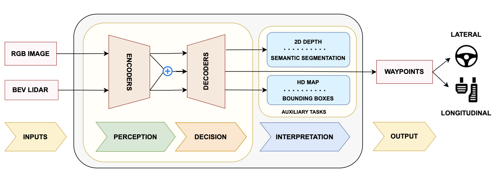
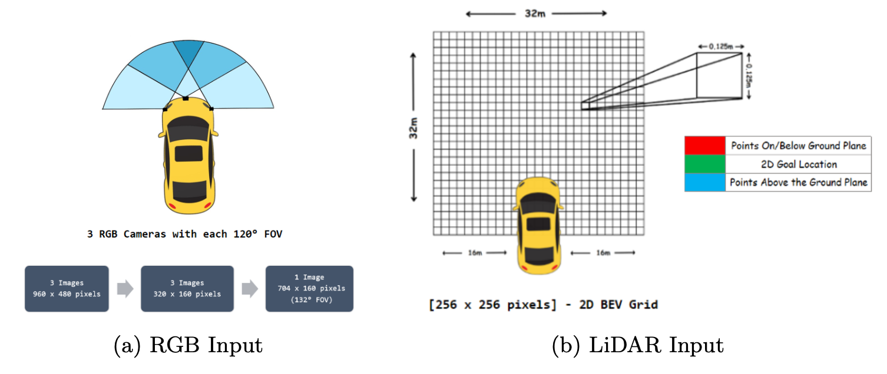

ViTFuser
Overview
ViTFuser is an attention-based deep learning architecture designed to improve decision-making in autonomous vehicles. It addresses limitations in prior state-of-the-art models (like TransFuser) that suffer from loss of global context during feature fusion. ViTFuser introduces multi-stage Vision Transformers (ViTs) and a Feature Pyramid Network (FPN) to better understand the scene and reduce traffic violations.
The project outperforms comparative existing models on CARLA simulation benchmarks, achieving higher Driving Scores (DS) and lower traffic infractions.

Dataset and Task
ViTFuser was evaluated on the CARLA 0.9.10 simulator, using data recorded at 2 FPS across 3,500 driving routes in varying towns and weather conditions.
- RGB images from 3 front-facing cameras (stitched into a wide-view image)
- LiDAR point cloud converted to 2D Bird’s-Eye-View (BEV) grid
- Output: 4 future waypoints for the ego vehicle

The goal is to predict waypoints accurately while minimizing infractions during navigation.
Model Architecture
1. Perception Module (Encoder)
- Processes RGB and LiDAR inputs using CNNs + multi-resolution Vision Transformers (ViT)
- RGB and LiDAR branches run in parallel, each extracting hierarchical features
- Cross-modal attention enables global context fusion
- Uses Feature Pyramid Network (FPN) for multi-scale feature extraction, boosting object detection accuracy

2. Decision Module (Decoder)
Predicts vehicle waypoints using a GRU-based network.
Handles auxiliary tasks such as:
- Semantic segmentation
- HD map generation
- Depth estimation
- Object detection (bounding boxes)
These tasks improve interpretability and overall navigation performance.
Parameters Comparison
| Model | Parameters |
|---|---|
| TransFuser | 168 million |
| Swin Transformer | 688 million |
| ViTFuser | 55 million |
ViTFuser reduces parameters by ~67% compared to TransFuser and ~91% compared to Swin Transformer, making it much more efficient while maintaining strong performance.
Results
ViTFuser was benchmarked on Longest6 and Town05 datasets from CARLA.
Longest6 Benchmark
| Model | DS | RC | IS |
|---|---|---|---|
| TransFuser | 43.48 | 77.72 | 0.60 |
| ViTFuser | 51.96 | 80.70 | 0.65 |
| ViTFuser + FPN | 55.15 | 81.43 | 0.69 |
Town05 Benchmark
| Model | DS (Short) | RC (Short) | DS (Long) | RC (Long) |
|---|---|---|---|---|
| TransFuser | 87.48 | 92.78 | 67.85 | 91.57 |
| ViTFuser | 90.04 | 94.79 | 74.82 | 92.40 |
| ViTFuser + FPN | 91.07 | 94.67 | 74.95 | 94.90 |
DS - Driving Score, RC - Route Completion, IS - Infraction Score